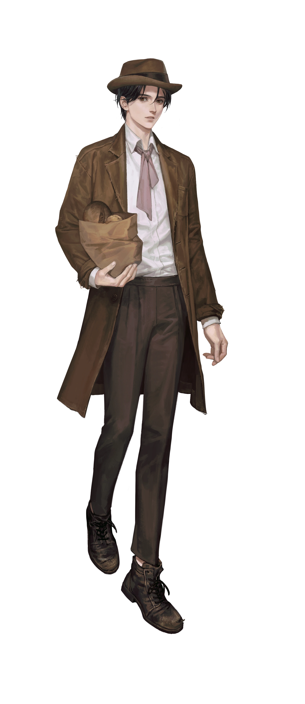
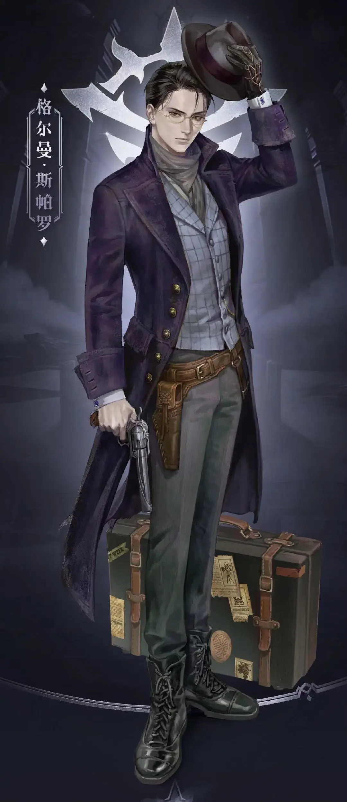
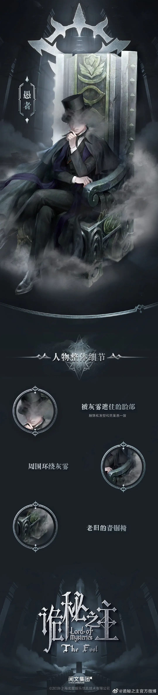

Klein Moretti is the protagonist of Lord of Mysteries and an important side character in Circle of Inevitability. A modern-era transmigrator living through the identity of Klein Moretti, he becomes The Fool, the ruler above the gray fog, and the founder of the Tarot Club.
This page contains major spoilers for Lord of Mysteries and Circle of Inevitability. Profile facts were checked against the linked source articles.Overview
Klein is the current owner of Sefirah Castle and holds authority connected to the Fool, Error, and Door Pathways. Through his many identities, he moves between ordinary society, secret organizations, the sea, and the highest levels of the supernatural world.
His defining qualities are caution, humor, intelligence, adaptability, and a strong desire to protect the innocent. He repeatedly chooses plans that preserve his humanity even while advancing toward the status of Saint, Angel, God, and finally Lord of Mysteries.
Profile snapshot
Biography & historical events
The chronology below follows the Klein Moretti/History article and the main Klein Moretti profile.
Before the Fifth Epoch: Zhou Mingrui
Before becoming Klein Moretti, he was Zhou Mingrui, a hardware engineer from Southwest China in the modern era. He studied a little of many subjects, enjoyed games, and learned Tarot divination while trying to impress someone he liked. After finding an old book titled Quintessential Divination and Arcane Arts of the Qin and Han Dynasty, he performed its Luck Enhancement Ritual and transmigrated in the middle of the night.
Tingen City and the Tarot Club
The original Klein was a history graduate living in Tingen City with Benson and Melissa Moretti. After Zhou Mingrui fused with his remnants, he joined the Nighthawks as civilian staff and became a Sequence 9 Beyonder of the Fool Pathway. The gray-fog space connected to his transmigration allowed him to draw Audrey Hall and Alger Wilson into his presence, creating the first Tarot Club gathering.
Volume 1 — Clown
Klein investigated supernatural incidents in Tingen and advanced to Clown. Ince Zangwill's schemes and the True Creator's spawn led to a battle that killed Klein and Dunn Smith. Klein returned to life through the power linked to the gray fog and left for Backlund to become stronger.
Volume 2 — Faceless
As Sherlock Moriarty, Klein became a detective in Backlund. He survived Rosago's assassination attempt, killed Lanevus while stopping the True Creator's descent, advanced through Magician and Faceless, and escaped a widening conflict involving Ince Zangwill, the royal family, and the Primordial Demoness.
Volume 3 — Traveler
As Gehrman Sparrow, Klein became a feared adventurer and pirate bounty hunter. He confronted the cult in Bansy Harbor, killed the Sea God Kalvetua in Bayam, worked with Cattleya's crew, advanced to Marionettist, and killed Admiral of Blood Senor.
Volume 4 — Undying
As Dwayne Dantès, Klein entered Backlund's upper society to pursue the Antigonus Family's Notebook and the Bizarro Sorcerer formula. He survived Foggy Town and Zaratul's trap, explored the undersea ruins with Azik Eggers, and worked with Leonard Mitchell and Daly Simone to kill Ince Zangwill.
Volume 5 — Red Priest
Klein investigated the Great Smog of Backlund and helped clear Amon's avatars with Arianna, Pallez Zoroast, and Will Auceptin. He opposed King George III's Black Emperor ritual, advanced to Scholar of Yore in the Berserk Sea, and discovered that the palace above the gray fog was Sefirah Castle.
Volume 6 — Lightseeker
Amon took Klein into the Forsaken Land of the Gods and revealed ancient secrets, including the truth that Earth was a far-future Earth. Klein digested the Scholar of Yore potion, escaped using suicide and resurrection, hunted Kotar, gained the characteristics for Miracle Invoker and Attendant of Mysteries, and led the City of Silver out of the Forsaken Land.
Volume 7 — The Hanged Man
As Merlin Hermes, Klein fulfilled wishes while digesting the Miracle Invoker potion. He helped seal 0-02, assisted Bernadette with Roselle's final mausoleum, created Utopia for his advancement ritual, escaped Adam's divine kingdom, and killed Zaratul to become a King of Angels.
Volume 8 — Fool
Klein resisted the awakening will of the Celestial Worthy, accommodated the Fool Uniqueness, and advanced to Sequence 0: The Fool. He defeated Amon inside Sefirah Castle with a supernova, then made preparations with the Evernight Goddess and the Tarot Club before entering slumber.
Slumber and Circle of Inevitability
Klein released the humans sealed in cocoons inside Sefirah Castle before sleeping with Arrodes. Even while asleep, his aura answered major crises, including Termiboros' descent in Cordu Village and the protection of Lumian Lee. On June 25, 1360, Klein fully awakened, fused with the Celestial Worthy, accommodated Sefirah Castle as The Fool, and later accommodated the Error and Door Uniquenesses. The current source records him as the new Lord of Mysteries and the first Great Old Dominator on Earth.
Appearance
Zhou Mingrui had short black hair, dark brown eyes, glasses, an unremarkable but refined face, and noticeable eye bags. Klein Moretti's original body had black hair, brown eyes, a thin build, and a scholarly air. As a Fool Pathway Beyonder, he used shapeshifting to create distinct appearances for his identities.
Personality
Klein is cautious, good-natured, humorous, polite, mature, and gentlemanly. He is fundamentally a lover of justice and will act even at personal cost. Dangerous experiences make him more ruthless, confident, and mysterious, but he continues to avoid harming innocent people because he fears both moral compromise and loss of control.
He is interested in history and appearance, and his talent for acting existed even before he became a Beyonder. The Acting Method strengthens his ability to imitate roles and identities while preserving a private sense of humanity beneath them.
Identities and titles
- The Fool: ruler above the gray fog and hidden leader of the Tarot Club.
- The World: the Tarot Club identity used for missions and commissions.
- Sherlock Moriarty: detective identity in Backlund.
- Gehrman Sparrow: adventurer and pirate bounty hunter.
- Dwayne Dantès: wealthy Backlund gentleman and social infiltrator.
- Merlin Hermes: wandering magician who fulfills wishes.
Image gallery






Pathway & authorities
Klein's progression follows the Fool Pathway, eventually reaching The Fool and then the Lord of Mysteries. His authority is associated with the Fool, Error, and Door pathways, with Sefirah Castle as his sefirot.

The emblem represents secrecy and change.
Sources
Profile facts and historical events were checked against the Klein Moretti article on the Lord of the Mysteries Wiki and its history article. The linked wiki is fan-maintained and may change.
The artwork on this page is shown for reference; credit belongs to the original creators.